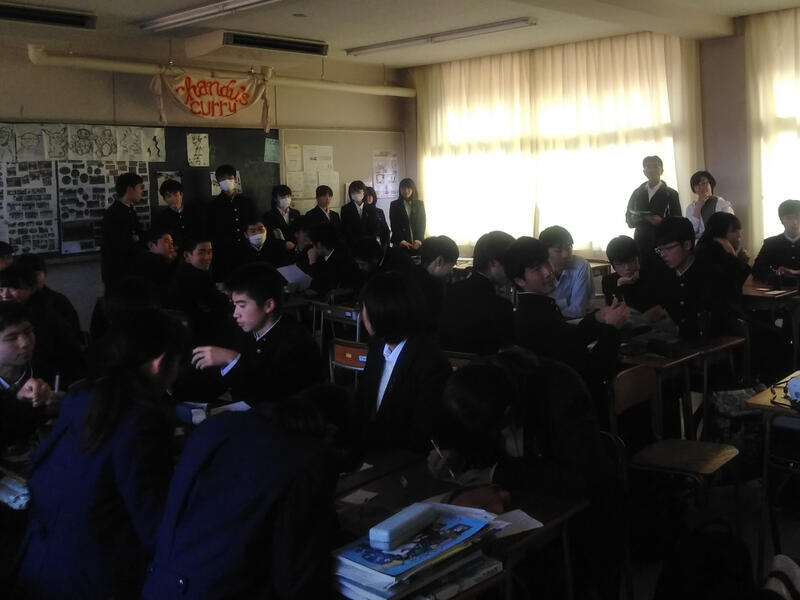
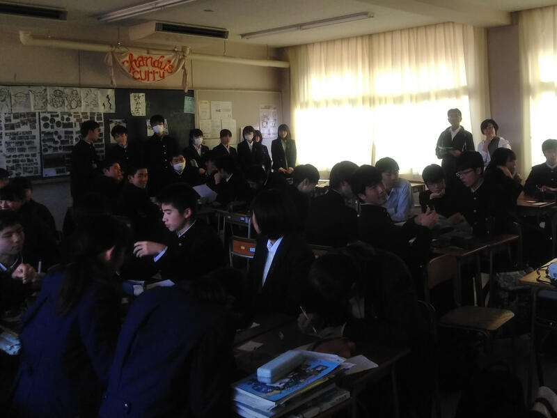

文字
背景
行間


2018年11月の記事一覧
SGH課題研究「進捗状況発表会」
平成３０年１１月２７日（火）６限・７限において、第２学年生徒が各教室で課題研究の進捗状況を発表しました。プレゼンテーションソフトを用いた発表、ポスターを用いた発表、口頭のみの発表等、発表方法は様々でしたが、これまでの研究についてグループごとに研究目的、調査（先行事例・先行研究・独自調査等）、分析、結論（提案）、今後の展望、参考文献等について伝えることができました。課題解決に向けて小学校と連携したり、佐倉市と連携したりするグループもありました。発表後にはクラス内で意見交換をしました。
また、１年生が課題研究を進める上で参考にするために、２年生の発表を見学しました（写真右）。

また、１年生が課題研究を進める上で参考にするために、２年生の発表を見学しました（写真右）。

ＳＧＨ課題研究「途中経過の発表会」（１年生）
平成３０年１１月２０日（火）６・７限に、課題研究に向けたグループ発表会を行いました。
１年生は、研究グループを作ってから、テーマを決め、研究方法等を考え、調査を始めていますが、今日までの過程を整理することを目的として、グループごとに研究について発表を行いました。短時間の発表ですが、スマートフォンを利用したり、グラフや図表等を用いたりする等の工夫をしていました。どのグループも研究目的、先行研究を意識した研究方法を語り、研究の方向を明確に示していました。聞き手の生徒は、疑問点や意見を付箋紙に書いて発表グループに渡しました。発表後はグループごとに付箋紙を整理し、今後の研究の課題を見つけたり、よりよい研究方法を考えたりしました。


１年生は、研究グループを作ってから、テーマを決め、研究方法等を考え、調査を始めていますが、今日までの過程を整理することを目的として、グループごとに研究について発表を行いました。短時間の発表ですが、スマートフォンを利用したり、グラフや図表等を用いたりする等の工夫をしていました。どのグループも研究目的、先行研究を意識した研究方法を語り、研究の方向を明確に示していました。聞き手の生徒は、疑問点や意見を付箋紙に書いて発表グループに渡しました。発表後はグループごとに付箋紙を整理し、今後の研究の課題を見つけたり、よりよい研究方法を考えたりしました。
SGH運営指導協議会（第２回）が開かれました。
投稿日時 : 2018/11/20
 sakura-h
sakura-h
平成３０年１１月２０日（火）スパーグローバルハイスクール（SGH）運営指導協議会が開かれました。
ＳＧＨ運営指導協議員の先生方３名と千葉県教育委員会の方２名が来校し、授業（ＧＬ探究）の様子を御覧になりました。その後、地域交流施設で協議会を行い、本校のＳＧＨ事業の進捗状況の報告を行うとともに先生方から御意見・御助言をいただきました。
協議会では、「９月の1分間スピーチと比較すると、今回の生徒の発表は、先行研究を意識している、具体的な計画を持っている、アイデアがある等大きな変化が見られた。」「指定１年目の３月のプレゼンより今日の発表の方がテーマ、目的、方法論がしっかりとできていた。」等の御意見をいただきました。また、「英語宿泊研修参加者と参加していない生徒の比較をするとよいのではないか。」「ＳＳＨとの関係づけをもっと深めるとよい。」等の御助言をいただきました。協議員の先生方ありがとうございました。
今後もＳＧＨ事業の質の向上に努めていきたいと思います。
ＳＧＨ運営指導協議員の先生方３名と千葉県教育委員会の方２名が来校し、授業（ＧＬ探究）の様子を御覧になりました。その後、地域交流施設で協議会を行い、本校のＳＧＨ事業の進捗状況の報告を行うとともに先生方から御意見・御助言をいただきました。
協議会では、「９月の1分間スピーチと比較すると、今回の生徒の発表は、先行研究を意識している、具体的な計画を持っている、アイデアがある等大きな変化が見られた。」「指定１年目の３月のプレゼンより今日の発表の方がテーマ、目的、方法論がしっかりとできていた。」等の御意見をいただきました。また、「英語宿泊研修参加者と参加していない生徒の比較をするとよいのではないか。」「ＳＳＨとの関係づけをもっと深めるとよい。」等の御助言をいただきました。協議員の先生方ありがとうございました。
今後もＳＧＨ事業の質の向上に努めていきたいと思います。
「海外理解促進のための講演会」
2018年11月16日、4･5時間目に1年生全員を対象として「海外理解促進のための講演会」が行われました。
JICAの稲葉健一先生とディレクトフォース授業支援の会の遠藤恭一先生の2名の講師の方をお招きして、それぞれご講演をいただきました。
稲葉先生の「グローバル化と国際教育」のご講演は、ご自身がパラグアイで体験した青年海外協力隊としての活動を中心に、パラグアイでの生活、現地で感じたこと、支援を現地に根付かせるためにはといった内容のお話でした。
遠藤先生の「激変するグローバル化社会で皆さんが考えるべきこと」のご講演では、
遠藤先生の海外での実体験を踏まえながら、大きく変わっていく将来の社会で生活していくために必要な考え方や意識についてお話をいただきました。
生徒からの質疑応答では、「青年海外協力隊に派遣される国に条件はあるのか」、「旧来の伝統や価値観を維持していくことは本当に良いことなのか」といった質問が出ました。


JICAの稲葉健一先生とディレクトフォース授業支援の会の遠藤恭一先生の2名の講師の方をお招きして、それぞれご講演をいただきました。
稲葉先生の「グローバル化と国際教育」のご講演は、ご自身がパラグアイで体験した青年海外協力隊としての活動を中心に、パラグアイでの生活、現地で感じたこと、支援を現地に根付かせるためにはといった内容のお話でした。
遠藤先生の「激変するグローバル化社会で皆さんが考えるべきこと」のご講演では、
遠藤先生の海外での実体験を踏まえながら、大きく変わっていく将来の社会で生活していくために必要な考え方や意識についてお話をいただきました。
生徒からの質疑応答では、「青年海外協力隊に派遣される国に条件はあるのか」、「旧来の伝統や価値観を維持していくことは本当に良いことなのか」といった質問が出ました。